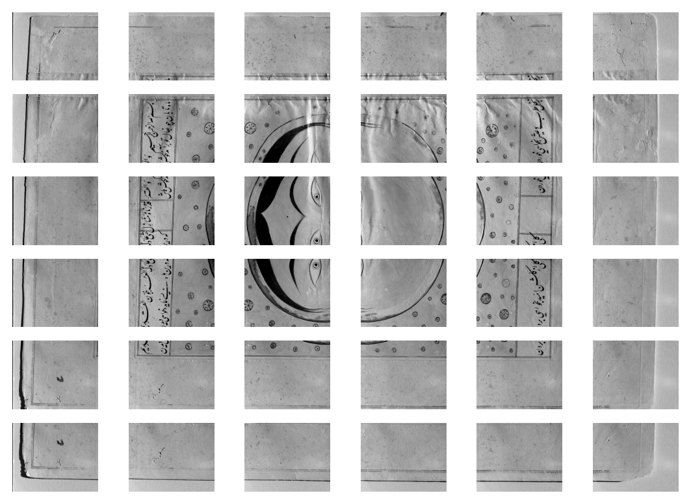

from fairdatanow import DataViewer, login, filters Exploring your remote data in a breeze
Instantly find and access all your Nextcloud data files
In order to to make use of fairdatanow, you will need a Nextcloud server url and credentials to access a folder on a (self hosted) Nextcloud server.
TipUse `save_login()’ to store your credentials
You need to type your username and password only once and store them safely with the save_login() function. Next time you access the Nextcloud server you can retrieve these credentials with the login() function. In this way you avoid typing them directly in the notebook, which is not save if you need to share these notebooks with others…
To get started you need to import the DataViewer class from the package and instantiate it with the Nextcloud login() and **filters() functions. Depending on the amount of files in the cloud storage it might take some time to build the interactive file table. In this example we want to create a table for 8118 files (and counting) from the Falnama project which takes about 13 seconds.
Given the complete overview of all data files in a project, you typically want find a subset of files for inspection further exploration. As an example let’s try to to filter the Infrared Reflectography (IRR) image tiles that were taken from page 71803-01 depicting the Moon. In most cases it would be sufficient to filter the file list with a simple search string search='Moon_IR tiles' in combination with a extensions=['.tif'] filter. However we see in this case that that we get a list with 73 files. So we need to be more specific. Additional filtering can be done with an advanced regular expression filter: search='.*Moon_IR tiles_\d', use_regex=True. The _\d part of the search pattern implies that after an underscore the filename should include at least one digit.
url = 'https://laboppad.nl/falnama-project'
dv = DataViewer(login(url), **filters(search='.*Moon_IR tiles_\\d', use_regex=True, extensions=['.tif']))C:\Users\koenv\Documents\fairdatanow\.venv\Lib\site-packages\urllib3\connectionpool.py:2521: InsecureRequestWarning: Unverified HTTPS request is being made to host 'laboppad.nl'. Adding certificate verification is strongly advised. See: https://urllib3future.readthedocs.io/en/latest/advanced-usage.html#tls-warnings
warnings.warn(Connection with nextcloud server is ok.dvfrom fairdatanow import to_iframe#to_iframe(dv, 'file_table.html') Below the filtered file table one can see that we have selected exactly 36 files out of 8118 files in the Nextcloud storage.
Note
Note that in this documentation interactivity is limited. In a Jupyter notebook you can adjust this filter selection and observe the resulting file list.
We can now download these files into a cache folder on your local computer in order to process them further. This can be done easily with the .download_filtered() method.
files = dv.download_filtered() Ready with downloading 36 selected remote files to local cache: C:\Users\koenv\.cache\fairdatanow The file paths can now be inspected:
files['C:\\Users\\koenv\\.cache\\fairdatanow\\falnama-project\\07. Results\\09. IRR\\IRR-tiles\\71803-01_IRR 1600 nm\\71803-01_Moon_IR tiles_0063.tif',
'C:\\Users\\koenv\\.cache\\fairdatanow\\falnama-project\\07. Results\\09. IRR\\IRR-tiles\\71803-01_IRR 1600 nm\\71803-01_Moon_IR tiles_0064.tif',
'C:\\Users\\koenv\\.cache\\fairdatanow\\falnama-project\\07. Results\\09. IRR\\IRR-tiles\\71803-01_IRR 1600 nm\\71803-01_Moon_IR tiles_0065.tif',
'C:\\Users\\koenv\\.cache\\fairdatanow\\falnama-project\\07. Results\\09. IRR\\IRR-tiles\\71803-01_IRR 1600 nm\\71803-01_Moon_IR tiles_0066.tif',
'C:\\Users\\koenv\\.cache\\fairdatanow\\falnama-project\\07. Results\\09. IRR\\IRR-tiles\\71803-01_IRR 1600 nm\\71803-01_Moon_IR tiles_0067.tif',
'C:\\Users\\koenv\\.cache\\fairdatanow\\falnama-project\\07. Results\\09. IRR\\IRR-tiles\\71803-01_IRR 1600 nm\\71803-01_Moon_IR tiles_0068.tif',
'C:\\Users\\koenv\\.cache\\fairdatanow\\falnama-project\\07. Results\\09. IRR\\IRR-tiles\\71803-01_IRR 1600 nm\\71803-01_Moon_IR tiles_0069.tif',
'C:\\Users\\koenv\\.cache\\fairdatanow\\falnama-project\\07. Results\\09. IRR\\IRR-tiles\\71803-01_IRR 1600 nm\\71803-01_Moon_IR tiles_0070.tif',
'C:\\Users\\koenv\\.cache\\fairdatanow\\falnama-project\\07. Results\\09. IRR\\IRR-tiles\\71803-01_IRR 1600 nm\\71803-01_Moon_IR tiles_0071.tif',
'C:\\Users\\koenv\\.cache\\fairdatanow\\falnama-project\\07. Results\\09. IRR\\IRR-tiles\\71803-01_IRR 1600 nm\\71803-01_Moon_IR tiles_0072.tif',
'C:\\Users\\koenv\\.cache\\fairdatanow\\falnama-project\\07. Results\\09. IRR\\IRR-tiles\\71803-01_IRR 1600 nm\\71803-01_Moon_IR tiles_0073.tif',
'C:\\Users\\koenv\\.cache\\fairdatanow\\falnama-project\\07. Results\\09. IRR\\IRR-tiles\\71803-01_IRR 1600 nm\\71803-01_Moon_IR tiles_0074.tif',
'C:\\Users\\koenv\\.cache\\fairdatanow\\falnama-project\\07. Results\\09. IRR\\IRR-tiles\\71803-01_IRR 1600 nm\\71803-01_Moon_IR tiles_0075.tif',
'C:\\Users\\koenv\\.cache\\fairdatanow\\falnama-project\\07. Results\\09. IRR\\IRR-tiles\\71803-01_IRR 1600 nm\\71803-01_Moon_IR tiles_0076.tif',
'C:\\Users\\koenv\\.cache\\fairdatanow\\falnama-project\\07. Results\\09. IRR\\IRR-tiles\\71803-01_IRR 1600 nm\\71803-01_Moon_IR tiles_0077.tif',
'C:\\Users\\koenv\\.cache\\fairdatanow\\falnama-project\\07. Results\\09. IRR\\IRR-tiles\\71803-01_IRR 1600 nm\\71803-01_Moon_IR tiles_0078.tif',
'C:\\Users\\koenv\\.cache\\fairdatanow\\falnama-project\\07. Results\\09. IRR\\IRR-tiles\\71803-01_IRR 1600 nm\\71803-01_Moon_IR tiles_0079.tif',
'C:\\Users\\koenv\\.cache\\fairdatanow\\falnama-project\\07. Results\\09. IRR\\IRR-tiles\\71803-01_IRR 1600 nm\\71803-01_Moon_IR tiles_0080.tif',
'C:\\Users\\koenv\\.cache\\fairdatanow\\falnama-project\\07. Results\\09. IRR\\IRR-tiles\\71803-01_IRR 1600 nm\\71803-01_Moon_IR tiles_0081.tif',
'C:\\Users\\koenv\\.cache\\fairdatanow\\falnama-project\\07. Results\\09. IRR\\IRR-tiles\\71803-01_IRR 1600 nm\\71803-01_Moon_IR tiles_0082.tif',
'C:\\Users\\koenv\\.cache\\fairdatanow\\falnama-project\\07. Results\\09. IRR\\IRR-tiles\\71803-01_IRR 1600 nm\\71803-01_Moon_IR tiles_0083.tif',
'C:\\Users\\koenv\\.cache\\fairdatanow\\falnama-project\\07. Results\\09. IRR\\IRR-tiles\\71803-01_IRR 1600 nm\\71803-01_Moon_IR tiles_0084.tif',
'C:\\Users\\koenv\\.cache\\fairdatanow\\falnama-project\\07. Results\\09. IRR\\IRR-tiles\\71803-01_IRR 1600 nm\\71803-01_Moon_IR tiles_0085.tif',
'C:\\Users\\koenv\\.cache\\fairdatanow\\falnama-project\\07. Results\\09. IRR\\IRR-tiles\\71803-01_IRR 1600 nm\\71803-01_Moon_IR tiles_0086.tif',
'C:\\Users\\koenv\\.cache\\fairdatanow\\falnama-project\\07. Results\\09. IRR\\IRR-tiles\\71803-01_IRR 1600 nm\\71803-01_Moon_IR tiles_0087.tif',
'C:\\Users\\koenv\\.cache\\fairdatanow\\falnama-project\\07. Results\\09. IRR\\IRR-tiles\\71803-01_IRR 1600 nm\\71803-01_Moon_IR tiles_0088.tif',
'C:\\Users\\koenv\\.cache\\fairdatanow\\falnama-project\\07. Results\\09. IRR\\IRR-tiles\\71803-01_IRR 1600 nm\\71803-01_Moon_IR tiles_0089.tif',
'C:\\Users\\koenv\\.cache\\fairdatanow\\falnama-project\\07. Results\\09. IRR\\IRR-tiles\\71803-01_IRR 1600 nm\\71803-01_Moon_IR tiles_0090.tif',
'C:\\Users\\koenv\\.cache\\fairdatanow\\falnama-project\\07. Results\\09. IRR\\IRR-tiles\\71803-01_IRR 1600 nm\\71803-01_Moon_IR tiles_0091.tif',
'C:\\Users\\koenv\\.cache\\fairdatanow\\falnama-project\\07. Results\\09. IRR\\IRR-tiles\\71803-01_IRR 1600 nm\\71803-01_Moon_IR tiles_0092.tif',
'C:\\Users\\koenv\\.cache\\fairdatanow\\falnama-project\\07. Results\\09. IRR\\IRR-tiles\\71803-01_IRR 1600 nm\\71803-01_Moon_IR tiles_0093.tif',
'C:\\Users\\koenv\\.cache\\fairdatanow\\falnama-project\\07. Results\\09. IRR\\IRR-tiles\\71803-01_IRR 1600 nm\\71803-01_Moon_IR tiles_0094.tif',
'C:\\Users\\koenv\\.cache\\fairdatanow\\falnama-project\\07. Results\\09. IRR\\IRR-tiles\\71803-01_IRR 1600 nm\\71803-01_Moon_IR tiles_0095.tif',
'C:\\Users\\koenv\\.cache\\fairdatanow\\falnama-project\\07. Results\\09. IRR\\IRR-tiles\\71803-01_IRR 1600 nm\\71803-01_Moon_IR tiles_0096.tif',
'C:\\Users\\koenv\\.cache\\fairdatanow\\falnama-project\\07. Results\\09. IRR\\IRR-tiles\\71803-01_IRR 1600 nm\\71803-01_Moon_IR tiles_0097.tif',
'C:\\Users\\koenv\\.cache\\fairdatanow\\falnama-project\\07. Results\\09. IRR\\IRR-tiles\\71803-01_IRR 1600 nm\\71803-01_Moon_IR tiles_0098.tif']Let’s create a plot to see what they look like…
import matplotlib.pyplot as pltfig, axs = plt.subplots(nrows=6, ncols=6)
axs = axs.flatten()
for ax, file in zip(axs, files):
im = plt.imread(file)
ax.imshow(im, cmap='Greys_r')
ax.axis('off')
FUNCTIONS
import panel as pn
import param
import pandas as pd
import nc_py_api
import keyring
import re
import os
from panel.viewable import Viewer
from humanize import naturalsize
from pathlib import Path
import time
import ipynb_path
from IPython.display import Markdowndef filters(search='', use_regex=False, extensions=[], show_directories=False, show_filters=True, columns=['path', 'size', 'modified', 'ext']):
'''Utility function to easily adapt a default file filter dictionary based on a combination of search criteria!'''
filter_dict = dict(search=search, use_regex=use_regex, extensions=extensions, show_directories=show_directories, show_filters=show_filters, columns=columns)
return filter_dict
def save_login(url, user, password, sep='\t'):
'''Safely store nextcloud login username and password. '''
# split url
pattern = '(^https://[^/]+/)(.*)'
m = re.match(pattern, url)
# check
assert m, 'Invalid nextcloud url. Needs to be formatted as: https://<my-server.com>/<folder>'
nextcloud_url, folder = m.groups()
# test nextcloud connection
try:
nc = nc_py_api.Nextcloud(nextcloud_url=nextcloud_url, nc_auth_user=user, nc_auth_pass=password)
nc.update_server_info()
test_ok = True
except:
test_ok = False
if test_ok:
# save
combi = f'{user}{sep}{password}'
keyring.set_password(nextcloud_url, 'X', combi) # default keyring username is 'X'
print(f'Saved user name and password for: {nextcloud_url}')
if not test_ok:
# do not save
print(f'Did not save login due to incorrect credentials for nextcloud server: {nextcloud_url}')
def login(url, sep='\t', verbose=True):
'''Load user name name and password configuration from keyring. '''
# split url
pattern = '(^https://[^/]+/)(.*)'
m = re.match(pattern, url)
# check url formatting
assert m, 'Invalid nextcloud url. Needs to be formatted as: https://<my-server.com>/<folder>'
nextcloud_url, folder = m.groups()
# retrieve actual user + password combination from keyring
combi = keyring.get_password(nextcloud_url, 'X') # default keyring username is 'X'
assert combi, f'Did not find user name and password for nextcloud server: {nextcloud_url}. Did you forget to use `save_login()` to store your credentials?'
user, password = re.split(sep, combi)
# test nextcloud connection
try:
nc = nc_py_api.Nextcloud(nextcloud_url=nextcloud_url, nc_auth_user=user, nc_auth_pass=password)
nc.update_server_info()
test_ok = True
except:
test_ok = False
assert test_ok, 'Login failed. Are your saved name and password correct?'
# all tests are ok, so return configuration
if verbose:
print('Connection with nextcloud server is ok.')
login_configuration = {'url': url, 'user': user, 'password': password}
return login_configuration
pn.extension("tabulator")
def to_iframe(obj, html_filename, height='500px'):
'''Save panel-like object as full HTML page `html_filename` in notefolder.
In this way it should be possible to preserve rich interactive visualizations directly in web pages.
See: https://panel.holoviz.org/reference/panes/HTML.html#html-documents
'''
# Detect notebooks folder
notebooks_dir = os.path.dirname(ipynb_path.get())
# Save the plot as html file to notebooks folder
# this is the only way I found to let quarto
html_path = os.path.join(notebooks_dir, html_filename)
pn.panel(obj).save(html_path)
print(f'Saved file table as: {html_filename}')
class DataViewer(Viewer):
# DataFrames
data = param.DataFrame()
filtered_data = param.DataFrame()
# list filters
columns = param.ListSelector(default=["path", "size", "modified"])
extensions = param.ListSelector(default=[])
# typed filters
search = param.String(default="")
show_directories = param.Boolean(default=False)
show_filters = param.Boolean(default=False)
use_regex = param.Boolean(default=False)
# param attributes
bytes_amount = param.Integer()
#non param attributes
nc_py_api.options.NPA_NC_CERT = False
def __init__(self, configuration, subdir=None, verify=True, **params):
'Initalize a DataViewer instance.'
super().__init__(**params)
nc_py_api.options.NPA_NC_CERT = verify
self.nc = self._create_connector(configuration)
# load all param attributes where necessary
self.data = self._load_dataframe(subdir)
self.param.columns.objects = self.data.columns.to_list()
self.param.extensions.objects = sorted(self.data['ext'].unique())
def _create_connector(self, configuration):
# parse configuration
m = re.match('(^https://[^/]+/)(.*)', configuration['url'])
nextcloud_url, self.cache_dir = m.groups()
nc_auth_user = configuration['user']
nc_auth_pass = configuration['password']
return nc_py_api.Nextcloud(nextcloud_url=nextcloud_url,
nc_auth_user=nc_auth_user,
nc_auth_pass=nc_auth_pass)
@pn.cache()
def _load_dataframe(self, subdir):
if subdir is None:
subdir = self.cache_dir
fsnodes = self.nc.files.listdir(subdir, depth=-1, exclude_self=False)
data = [{'path': fsnode.user_path,
'size': naturalsize(fsnode.info.size, True),
'ext': os.path.splitext(fsnode.user_path)[1].lower(),
'byte_size': fsnode.info.size,
'modified': fsnode.info.last_modified,
'isdir': fsnode.is_dir
} for fsnode in fsnodes]
return pd.DataFrame(data)
def download_selected(self, cache_dir=None, verbose=True):
'''Download selected files (blue rows) from `table` to default local cache directory.
A custom `cache_dir` can be specified. '''
remote_data = self.data.iloc[self._file_table.selected_dataframe.index.tolist()]
return self._download(remote_data, cache_dir, verbose=verbose)
def download_filtered(self, cache_dir=None, verbose=True):
remote_data = self.data.iloc[self.filtered_data.index.tolist()]
return self._download(remote_data, cache_dir, verbose=verbose)
def _download(self, remote_data, cache_dir=None, verbose=True):
# create cache path
if cache_dir is None:
cache_path = Path.home().joinpath('.cache', 'fairdatanow')
else:
cache_path = Path.home().joinpath('.cache', cache_dir)
os.makedirs(cache_path, exist_ok=True)
# obtain remote paths and remote timestamps
local_path_list = []
for i, [remote_path, remote_modified, remote_isdir] in enumerate(zip(remote_data['path'].tolist(), remote_data['modified'].tolist(), remote_data['isdir'].tolist())):
# only download actual files
if not remote_isdir:
remote_directory = os.path.dirname(remote_path)
local_directory = cache_path.joinpath(remote_directory) # I guess this will not yet work for Windows
# create directory structure inside cache
os.makedirs(local_directory, exist_ok=True)
# get remote epoch time
remote_modified_epoch_time = remote_modified.timestamp()
# construct corresponding local path
local_path = cache_path.joinpath(remote_path)
local_path_list.append(str(local_path))
# check if local file exists and if modification times are similar
is_local = local_path.exists()
is_similar = False
local_modified_epoch_time = None
if is_local:
local_modified_epoch_time = os.stat(local_path).st_mtime
if local_modified_epoch_time == remote_modified_epoch_time:
is_similar = True
# download from nextcloud
if not is_similar:
print(f'[{i+1}/{len(remote_data)}] Timestamps do no match: {remote_modified_epoch_time} vs {local_modified_epoch_time}', end='\r')
print(f'[{i+1}/{len(remote_data)}] Downloading to: {local_path} ' , end='\r')
# write to cache
with open(local_path, 'bw') as fh:
self.nc.files.download2stream(remote_path, fh)
# adjust last modified timestamp
now = int(time.time())
os.utime(local_path, (now, remote_modified_epoch_time))
if verbose:
print(f"Ready with downloading {len(remote_data)} selected remote files to local cache: {cache_path} ")
return local_path_list
@param.depends("data", "columns", "search", "extensions", "show_directories", "use_regex", watch=True)
def _update_filtered_data(self):
# set the base df for readability and a non-watched variable
df = self.data
# search the dataframe in column path if it contains the search string
if self.use_regex:
df = df[df['path'].str.match(self.search, flags=re.IGNORECASE)]
else:
df = df[df["path"].str.lower().str.contains(self.search.lower())]
# filter to only include the extensions that are selected
if self.extensions:
df = df[df["ext"].isin(self.extensions)]
# save the total bytes_size in the bytes_amount variable
self.bytes_amount = df[df["isdir"] == False]["byte_size"].sum()
# if show_directories is turned off exclude them from the df
if not self.show_directories:
df = df[df["isdir"] == False]
# only select the columns from the column selector
self.filtered_data = df[self.columns]
@param.depends("filtered_data")
def number_of_rows(self):
return f"Showing {len(self.filtered_data)} out of {len(self.data)} rows | Total size: {naturalsize(self.bytes_amount, True)}"
def export_filters(self):
return {"columns" : self.columns,
"extensions" : self.extensions,
"search" : self.search,
"show_directories" : self.show_directories,
"show_filters" : self.show_filters,
"use_regex" : self.use_regex
}
def clear_filters(self, event):
self.columns = ["path", "size", "modified"]
self.extensions = []
self.search = ""
self.show_directories = True
self.show_filters = True
self.use_regex = False
@param.depends("show_filters")
def make_widgetbox(self):
if self.show_filters:
button = pn.widgets.Button(name='Clear filters', button_type='primary')
button.on_click(self.clear_filters)
self.filter_menu = pn.WidgetBox('# Filters',
pn.widgets.MultiChoice.from_param(self.param.columns),
pn.widgets.MultiChoice.from_param(self.param.extensions),
pn.widgets.Checkbox.from_param(self.param.show_directories),
button
)
return self.filter_menu
self.filter_menu = None
def __panel__(self):
self._file_table = pn.widgets.Tabulator(self.param.filtered_data, height=350, pagination=None, show_index=False, selectable=True, disabled=True)
return pn.Column(
pn.Row(pn.widgets.TextInput.from_param(self.param.search),
pn.widgets.Checkbox.from_param(self.param.use_regex),
pn.widgets.Checkbox.from_param(self.param.show_filters),
self.make_widgetbox
),
self._file_table,
self.number_of_rows
)
# dirty hack to avoid nbdev + panel docstring problems
DataViewer.__doc__ = 'Create connection with a Nextcloud server and list the contents of a folder.'